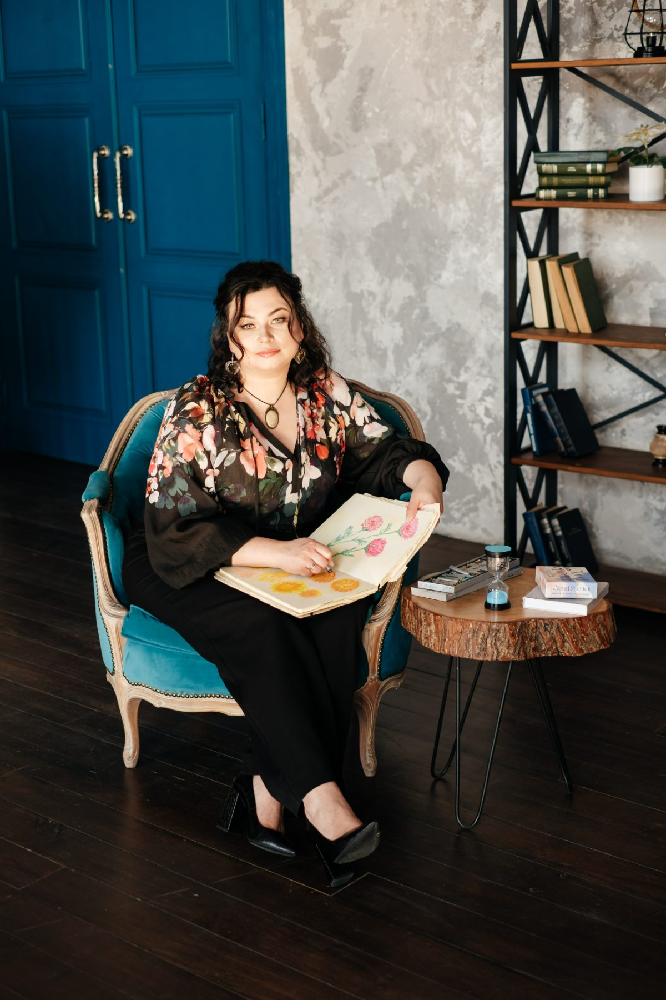

Понад 9 років допомагаю дорослим долати тривогу, травму та вигорання — індивідуально і в групі, очно та онлайн.

Мар'яна Вербицька — психолог-консультант, арт-терапевт, психодраматист. 9 років практики. Київ.
Я не пояснюю вам, що з вами не так.
Я сиджу поруч і дивлюся туди, куди ви самі поки не наважуєтеся подивитися. Терапія для мене — це не пошук причин і не видача рецептів. Це простір, де можна повільно, без поспіху, розібратися з тим, що носиш у тілі вже давно.
Я працюю з тілом і словом одночасно. Бо тіло часто знає раніше, ніж голова встигає зрозуміти.
Використовую арт-терапію, психодраму, ізраїльські протоколи роботи з травмою (SeeFar CBT, Basic Ph, метод «4 стихії»). Не тому, що це звучить переконливо, а тому, що це працює там, де слів не вистачає.
Тривога, яка живе у грудях і не має імені. Стосунки, у яких щось хронічно не так — і ви вже не знаєте, чи у вас, чи в них. Втрата. Горе. Кризи, які перевертають усе.
Внутрішній критик, який голосніший за всіх. Робота з наслідками травми — особистої, воєнної, родинної. Питання «хто я», «чого я хочу» і «чому мені так складно це дозволити собі».
Формат: очно — Київ, центр. Дистанційно — звідусіль.
Бізнес-освіта → магістр психології → арт-терапія, психодрама, нейропсихологія, ізраїльські протоколи роботи з травмою.
Так, я починала з бізнесу. Тепер розумію, чому: я люблю системи — але найцікавіша з них завжди була людська.
9 років практики.
Малюю акварельними олівцями. Пишу про себе короткі есеї, які майже ніколи не публікую. Колекціоную абсурд — як форму відпочинку від серйозності.
Вірю, що чесна розмова про важке — це теж форма любові.
Робота з тривогою, ПТСР, РДУГ, вигоранням та адаптаційними труднощами. Очно або дистанційно.
Індивідуальна робота починається зі знайомства — перша зустріч присвячена тому, щоб ви змогли розповісти про своє, а я — почути і зрозуміти, з чим ви прийшли. Разом ми формулюємо запит і визначаємо напрям роботи.
Перші 3–5 зустрічей можуть включати діагностику — це допомагає глибше зрозуміти ситуацію і підібрати найефективніший підхід саме для вас.
Якщо ви переживаєте гостру кризу або втрату — ми починаємо працювати одразу, без тривалого діагностичного етапу.
Формат: очно в Києві або дистанційно · Тривалість: 55 хв · Вартість: 2 000 грн
Арт-терапевтичні групи, психодрама та групи підтримки. Безпечний простір для самопізнання та відновлення.
Групова арт-терапія — робота з собою через творчість. Малюнок, колаж, глина, образ — ці інструменти дозволяють висловити те, для чого ще немає слів. Ми не оцінюємо результат — ми досліджуємо процес. Творчість тут не мета, а мова.
Психодрама — метод групової роботи, де людина може програти важливі ситуації свого життя, подивитись на них з іншого боку і знайти нові смисли.
Формат: 4–8 учасників · Тривалість: 2 год · Вартість: 800 грн / зустріч
Одна-три зустрічі, коли треба зараз. Стабілізація, ресурс, опора у складних обставинах.
Кризова робота — це коли події вже сталися, ресурсу мало, і важливо не «розібратися назавжди», а втриматися сьогодні. Я використовую ізраїльські протоколи (SeeFar CBT, Basic Ph) — короткі, структуровані, без занурення в довге минуле.
Працюємо з тим, що тут і зараз: повернути сон, зменшити тривогу, знайти три точки опори, які витримають вас наступного тижня.
Формат: очно або онлайн · Тривалість: 55 хв · Вартість: 2 000 грн
Курси, воркшопи та інтенсиви для психологів і спеціалістів помічних професій. Робота з травмою, арт-терапією, кризовим супроводом.
Я ділюся тим, що працює в моїй практиці — інструменти, протоколи, методики, яким мене вчили й які я сама перевірила на сотнях клієнтських годин. Без академічної води — лише те, що реально допомагає у вашій роботі.
Для кого: психологи на початку практики, соціальні працівники, педагоги, фасилітатори, медики — усі, хто працює з людьми у складних станах.
Формати: онлайн-курси з відеоуроками та практикою, живі воркшопи, інтенсиви по 1–3 дні, готові методички та робочі зошити.
Теми: арт-терапевтичні протоколи для дорослих, кризова робота, ізраїльські методики (SeeFar CBT, Basic Ph), психодрама для початківців.
«Іноді найважливіше — просто мати поруч когось, хто не злякається твого болю»
Я щиро вдячна Мар'яні за її роботу, особливо за індивідуальні бесіди. Я не особливо відкрита людина для балачок, але починаю говорити з Мар'яною легко. Після зустрічей легше. На колективні заняття прихожу нечасто, але час проходить швидко, забуваєш про сьогодення. Атмосфера добра — це залежить від фахівця. Я вдячна, що з нами працює чудовий психолог.
Індивідуально та в групіДо Мар'яни я прийшла на заняття восени 2023 року. У мене були важкі життєві обставини. Емоційно я була пригнічена і невпевнена в собі. Мар'яна проявила себе як професіонал і чуйна людина. Вона розумно вибудовувала шлях виходу з кризи. Її групові і індивідуальні заняття відрізняються креативністю та індивідуальним підходом. Завдяки цим заняттям я знайшла роботу і в мене з'явився смак до життя.
Кризова підтримкаЯ безмежно вдячна Мар'яні за неоціненну допомогу. Без прикрас, можна сказати, що вона за ці роки кілька разів рятувала моє життя. З неймовірною емпатією та чуйністю Мар'яна підбирала ключі саме до мене. Зображення страждань кольорами і малюнками, а потім перетворення їх на радісну картинку допомогло скинути вантаж з душі. Низький уклін і щира подяка світлій людині і фахівцю найвищого рівня!
Арт-терапіяПропрацьовуючи питання стосовно взаємовідносин з чоловіком, дітьми — мій внутрішній стан став більш стабільнішим, спокійнішим. Також відвідування сесій з Мар'яною допомогли мені пережити втрату тата. Для мене це вкрай важливо.
Індивідуальна роботаЯ неймовірно вдячна Мар'яні за якісну, глибоку і натхненну роботу — як у виборі тем, так і в їх наповненні. Ідея з червоною доріжкою — це щось неймовірне. Приймати компліменти й відчувати на собі погляди — для мене це був виклик, але водночас дуже цінний досвід: я відчула впевненість у собі, силу бути видимою.
Групова арт-терапіяРозпочати роботу з психологом, для мене було не просте рішення. Довгий час я вважала що мені це не потрібно. Але наважившись, я жодного разу не пошкодувала. Мені пощастило одразу познайомитися з психологом з якою мене стався match. Завдяки роботі з метафоричними та ресурсними картами я точно знаю і відчуваю де черпаю ресурс для руху вперед.
Метафоричні картиРік тому відбулася знакова подія — моя зустріч з пані Мар'яною, прекрасним психологом, яка принесла вагомі зміни в моєму житті. Високий професіоналізм, доброзичливість, тепло спілкування, повна відвертість, легкість відкритись. Щиро вдячна їй і при першій нагоді іду натхненна на наші зустрічі, які, як подарунок долі, дають інший настрій і налаштованість.
Індивідуальна роботаДякую Мар'яні за цікаві, пізнавальні та душевні зустрічі. Дякую за професійність, делікатність, чуттєву атмосферу і неймовірні практики, які дозволяли не просто ознайомитися з темами, а пропустити через себе. Окреме дякую за нотки творчості, які були присутні на кожній зустрічі — цього дуже не вистачає у повсякденному житті.
Групова роботаВаш співчутливий та неупереджений підхід створив безпечний простір, дозволивши мені відкрито обговорювати складні питання та відчувати себе справді почутою і віднайти відповідні життєві рішення.
Індивідуальна роботаОберіть формат і час самостійно — або напишіть, якщо не знаєте, з чого почати.
📅 Записатись на консультацію Або напишіть у TelegramНапишіть своє запитання або побажання — я зв'яжусь з вами найближчим часом.